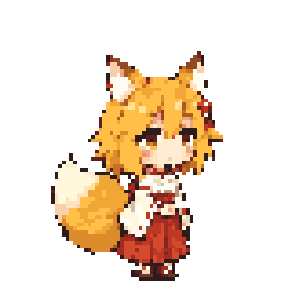

Ngoảnh chú ý

v5 idle → 6 frame mới → v5 idle. Clip mới 890 ms; khoảng nghỉ preview thêm900 ms.24 PNG mới, 4 clip. Chưa duyệt, chưa tích hợp. Giữ canvas80×80, scale4, anchor40/76 và palette chung. GIF có ảnh idle v5 trước và sau để lộ rõ khác biệt phong cách/chuyển tiếp; không nội suy hoặc bóp méo chân để che lỗi.
Ảnh tham chiếu đang dùng:

Bản nháp AI còn cần duyệt độ giống khuôn mặt, tỷ lệ và sự ổn định của tư thế. GIF lặp chỉ để xem lại; các clip là one-shot.

v5 idle → 6 frame mới → v5 idle. Clip mới 890 ms; khoảng nghỉ preview thêm900 ms.